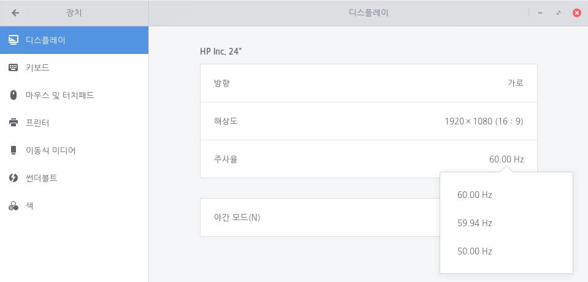
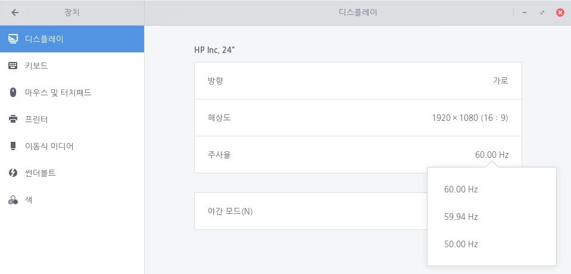

사용자의 화면 주사율을 설정할 수 있습니다. 화면 주사율은 모니터에 전송되는 화면 이미지를 설정된 주기에 따라 그리거나 업데이트하는 것을 의미합니다. 주사율 숫자가 높을수록 업데이트 주기가 짧아지며, 더 매끄러운 화면을 확인할 수 있습니다. 한컴구름에서 제공하는 화면 주사율 옵션은 사용자의 모니터 사양에 따라 달라지며, 기본 주사율은 60.00Hz입니다. 다음 단계를 수행하여 사용자 화면 주사율을 설정합니다.1. 좌측 하단의 [시작]아이콘을 클릭하고 검색 창에 "설정"을 입력한 후 [설정] 애플리케이션을 실행합니다.
 2. [설정] 애플리케이션 사이드 바에서 [장치]를 클릭하고 [디스플레이]를 클릭합니다.
2. [설정] 애플리케이션 사이드 바에서 [장치]를 클릭하고 [디스플레이]를 클릭합니다.
 3. [주사율] 탭에서 원하는 주사율을 선택한 후 우측 상단에서 [적용]을 클릭합니다.4-1. 원하는 주사율인 경우 [변경한 설정 유지]를 선택하여 주사율 설정을 완료합니다. 4-2. 원하지 않는 주사율인 경우 [되돌리기]를 선택하거나 15초 후 3번 단계를 다시 수행합니다.
3. [주사율] 탭에서 원하는 주사율을 선택한 후 우측 상단에서 [적용]을 클릭합니다.4-1. 원하는 주사율인 경우 [변경한 설정 유지]를 선택하여 주사율 설정을 완료합니다. 4-2. 원하지 않는 주사율인 경우 [되돌리기]를 선택하거나 15초 후 3번 단계를 다시 수행합니다.